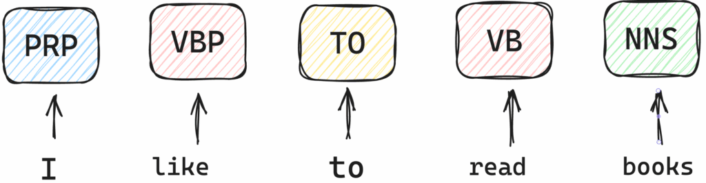
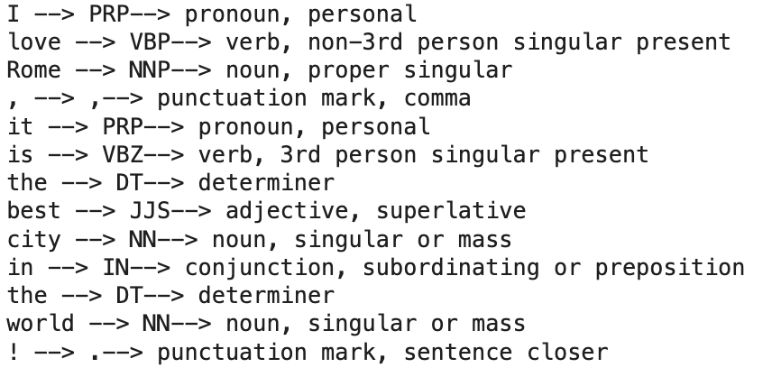
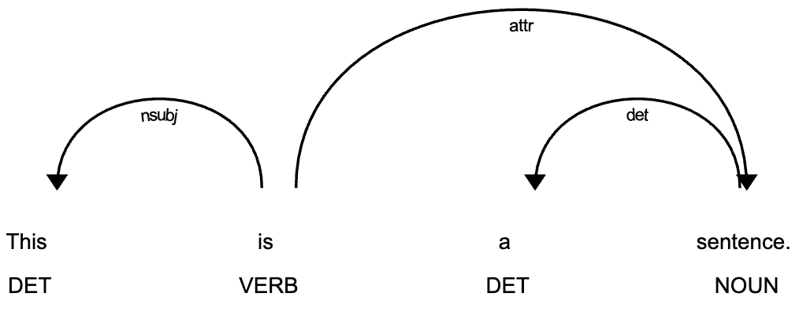
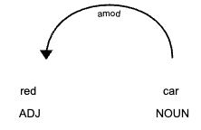
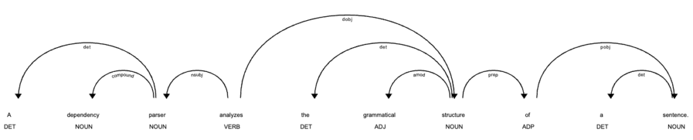
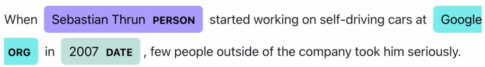
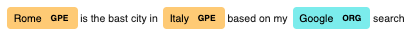

POS Tagging, Dependency Parser and Named Entity Recognition with SpaCy
Mastering NLP with spaCy — Part 2.
September 5, 2025 · NLP, SpaCy
Introduction
Words in a sentence provide a lot of information, such as what they mean in the real world, how they connect to other words, how they change the meaning of other words, and sometimes their true meaning can be ambiguous, and can even confuse humans!
All of this must be figured out to build applications with Natural Language Understanding capabilities. Three main tasks help to capture different kinds of information from text:
- Part-of-speech (POS) tagging
- Dependency parsing
- Named entity recognition
Part of Speech (POS) Tagging

In POS tagging, we classify words under certain categories, based on their function in a sentence. For example we want to differentiate a noun from a verb. This can help us understand the meaning of some text.
The most common tags are the following.
- NOUN: Names a person, place, thing, or idea (e.g., “dog”, “city”).
- VERB: Describes an action, state, or occurrence (e.g., “run”, “is”).
- ADJ: Modifies a noun to describe its quality, quantity, or extent (e.g., “big”, “happy”).
- ADV: Modifies a verb, adjective, or other adverb, often indicating manner, time, or degree (e.g., “quickly”, “very”).
- PRON: Replaces a noun or noun phrase (e.g., “he”, “they”).
- DET: Introduces or specifies a noun (e.g., “the”, “a”).
- ADP: Shows the relationship of a noun or pronoun to another word (e.g., “in”, “on”).
- NUM: Represents a number or quantity (e.g., “one”, “fifty”).
- CONJ: Connects words, phrases, or clauses (e.g., “and”, “but”).
- PRT: A particle, often part of a verb phrase or preposition (e.g., “up” in “give up”).
- PUNCT: Marks punctuation symbols (e.g., “.”, “,”).
- X: Catch-all for other or unclear categories (e.g., foreign words, symbols).
These are called Universal Tags. Then each language can have more granular tags. For example, we can expand the “noun” tag to add the singular/plural information etc.
In spaCy, tags are represented with acronyms like “VBD”. If you are not sure what an acronym refers to, you can ask spaCy to explain with spacy.explain()
Let’s see some examples.
import spacy
spacy.explain("VBD")
>>> verb, past tenseLet’s try now to investigate the POS tags of an entire sentence
nlp = spacy.load("en_core_web_sm")
doc = nlp("I love Rome, it is the best city in the world!"
)
for token in doc:
print(f"{token.text} --> {token.tag_}--> {spacy.explain(token.tag_)}")
The tag of a word depends on the words nearby, their tags, and the word itself.
POS taggers are based on statistical models. We have mainly
- Rule-Based Taggers: Use hand-crafted linguistic rules (e.g., “a word after ‘the’ is often a noun”).
- Statistical Taggers: Use probabilistic models like Hidden Markov Models (HMMs) or Conditional Random Fields (CRFs) to predict tags based on word and tag sequences.
- Neural Network Taggers: Use deep learning models like Recurrent Neural Networks (RNNs), Long Short-Term Memory (LSTM) networks, or Transformers (e.g., BERT) to capture context and predict tags.
Dependency Parsing
With POS tagging, we are able to categorize the words in our document, but we don’t know what the relationships are among the words. This is exactly what dependency parsing does. This helps us understand the structure of a sentence.
We can think a dependency as a direct edge/link that goes from a parent word to a child, which defines the relationship between the two. This is why we use dependency trees to represent the structure of sentences. See the following image.

In a dependency relation, we always have a parent, also called the head, and a dependent, also called the child. In the phrase “red car”, car is the head and red is the child.

In spaCy the relation is always assigned to the child and can be accessed with the attribute token.dep_
doc = nlp("red car")
for token in doc:
print(f"{token.text}, {token.dep_} ")
>>> red, amod
>>> car, ROOTAs you can see in a sentence, the main word, usually a verb, in this case a noun, has the role of ROOT. From the root, we build our dependency tree.
It is important to know, also that a word can have multiple children but only one parent.
So in this case what does the amod relationship tells us?
The relation applies whether the meaning of the noun is modified in a compositional way (e.g.,
) or an idiomatic way (
).
Indeed, the “red” is a word that modifies the word “car” by adding some information to it.
I will list now the most fundamental relationship you can find in a dependency parsing and their meaning.
Fot a comprehensive list check this website: https://universaldependencies.org/u/dep/index.html
We can visualize the dependency tree in spaCy using the display module. Let’s see an example.
from spacy import displacy
sentence = "A dependency parser analyzes the grammatical structure of a sentence."
nlp = spacy.load("en_core_web_sm")
doc = nlp(sentence)
displacy.serve(doc, style="dep")
Named Entity Recognition (NER)
A POS tag provides information about the role of a word in a sentence. When we perform NER we look for words that represent objects in the real world: a company name, a proper name, a location etc.
We refer to these words as named entity. See this example.

In the sentence “ Rome is the capital of Italy “, Rome and Italy are named entity, while capital it’s not because it is a generic noun.
spaCy supports many named entities already, to visualise them:
nlp.get_pipe("ner").labelsNamed entity are accessible in spaCy with the doc.ents attribute
sentence = "A dependency parser analyzes the grammatical structure of a sentence."
nlp = spacy.load("en_core_web_sm")
doc = nlp("Rome is the bast city in Italy based on my Google search")
doc.ents
>>> (Rome, Italy, Google)We can also ask spaCy provide some explanation about the named entities.
doc[0], doc[0].ent_type_, spacy.explain(doc[0].ent_type_)
>>> (Rome, 'GPE', 'Countries, cities, states')Again, we can rely on displacy to visualise the results of NER.
displacy.serve(doc, style="ent")
Final Thoughts
Understanding how language is structured and how it works is key to building better tools that can handle text in meaningful ways. Techniques like part-of-speech tagging, dependency parsing, and named entity recognition help break down sentences so we can see how words function, how they connect, and what real-world things they refer to.
These methods give us a practical way to pull useful information out of text, things like identifying who did what to whom, or spotting names, dates, and places. Libraries like spaCy make it easier to explore these ideas, offering clear ways to see how language fits together.
 Linkedin ️| X (Twitter) | Websitelinkedin.com
Linkedin ️| X (Twitter) | Websitelinkedin.com